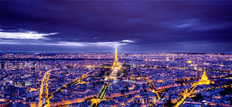
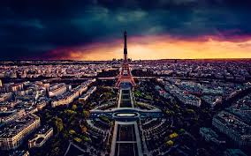
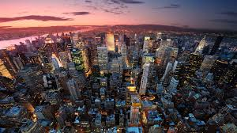
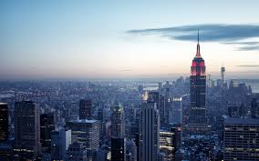

Tokyo është kryeqyteti i Japonisë
dhe një nga qytetet më moderne në
botë. Ai është një kombinim i teknologjisë
së avancuar dhe traditave të vjetra.
Qyteti ka ndërtesa shumë të larta dhe
zona të ndriçuara me drita neon.
Një vend i famshëm është Shibuya Crossing,
një nga kryqëzimet më të ngarkuara në botë.
Tokyo ka gjithashtu tempuj tradicionalë
si Senso-ji. Kuzhina japoneze është shumë
e njohur, veçanërisht sushi. Qyteti është
shumë i pastër dhe i organizuar.
Transporti publik është shumë i
zhvilluar dhe efikas. Tokyo është një qendër e
madhe ekonomike dhe teknologjike.
Çdo vit tërheq miliona vizitorë nga e gjithë bota.
🗼 Paris


Paris është kryeqyteti i Francës
dhe një nga qytetet më romantike
në botë. Ai është i njohur për
arkitekturën elegante dhe historinë e
pasur. Një nga simbolët më të famshëm
është Eiffel Tower. Qyteti është gjithashtu
shtëpia e muzeut të famshëm Louvre
Museum. Lumi Seine kalon nëpër qytet
duke i dhënë një bukuri të veçantë.
Paris është qendër e modës dhe stilit
në botë. Ai ka shumë kafene dhe
restorante tradicionale. Qyteti
është i njohur për kuzhinën e tij të
shijshme dhe ëmbëlsirat. Turistët e
vizitojnë për kulturën, artin dhe historinë.
Paris quhet shpesh “Qyteti i Dritave”.
🗽 NewYork


New York City është një nga qytetet më të njohura
në botë dhe një qendër globale për financë,
kulturë dhe media. Ai ndodhet në Shtetet e
Bashkuara të Amerikës dhe përbëhet nga pesë
boroughs. Qyteti është i famshëm për ndërtesat
e larta si Empire State Building dhe Statue of
Liberty. New York është gjithashtu shtëpia e
Central Park, një park i madh në mes të qytetit.
Ai njihet si “qyteti që nuk fle kurrë” për shkak
të jetës së tij aktive 24 orë. Broadway është
qendra kryesore e teatrit dhe muzikës. Qyteti
ka një popullsi shumë të larmishme nga kultura
të ndryshme. Wall Street është zemra
financiare e botës. New York është
gjithashtu një qendër e rëndësishme
për modën dhe artin.
Turistët nga e gjithë bota e vizitojnë çdo vit.